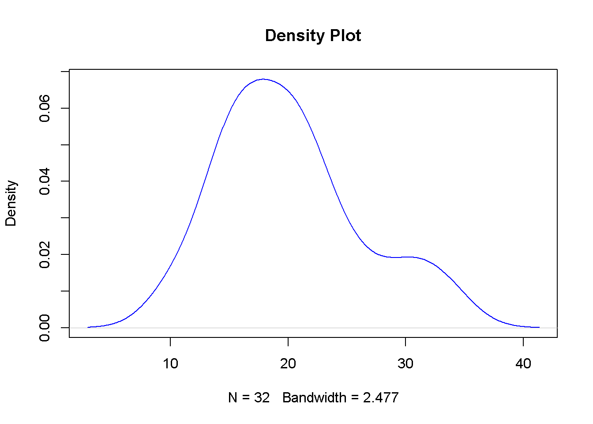
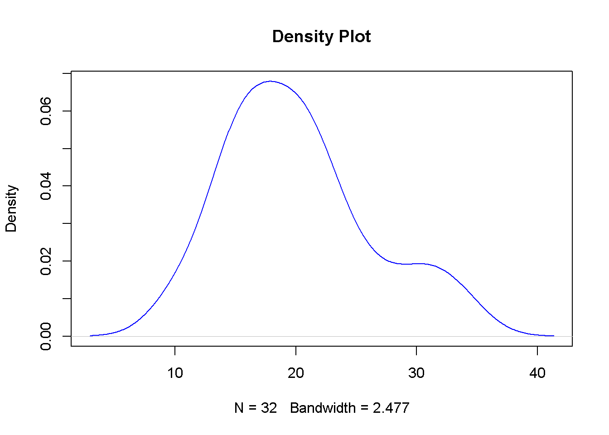
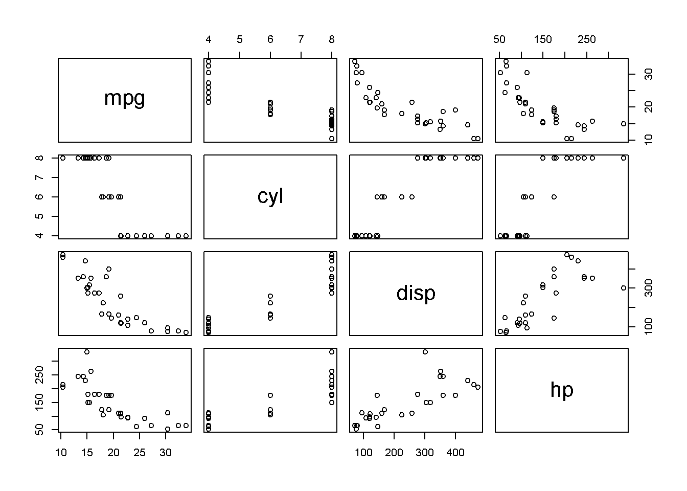
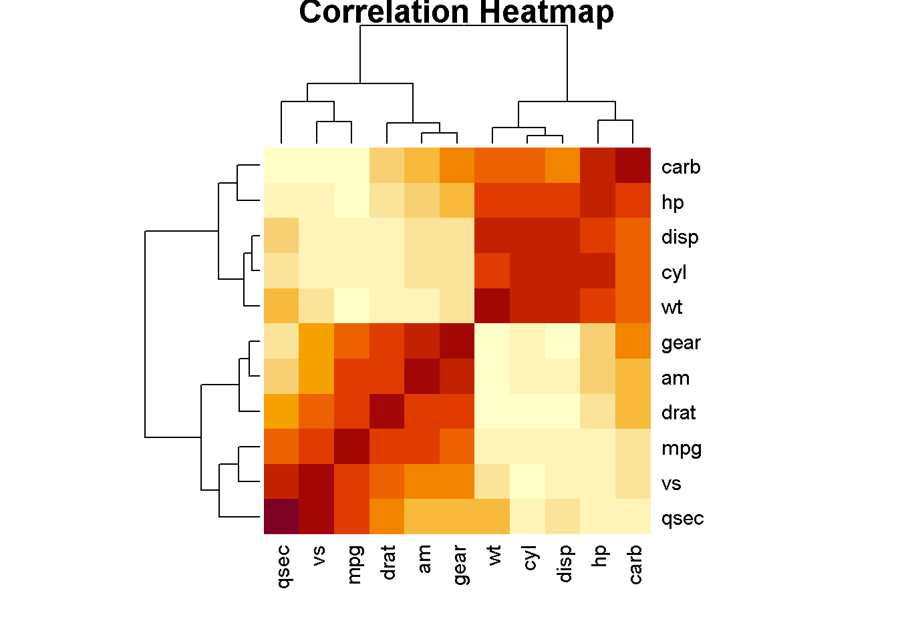

Code
plot(density(mtcars$mpg), main="Density Plot", col="blue")
Statistics is a powerful tool used across disciplines — from economics and psychology to biology, data science, and machine learning. It enables:
Understanding statistics is essential for anyone involved in empirical research, policy making, data-driven decision-making, or scientific inquiry.
This book covers:
The complete set of all units of interest. Examples:
A subset of the population, selected for analysis. Goal: represent the population accurately.
Population → Sample → Statistic → Inference → Population Parameter
A hypothesis is a testable assumption about a population.
| Error Type | Description |
|---|---|
| Type I Error | Rejecting \(H_0\) when it’s true (false positive) |
| Type II Error | Failing to reject \(H_0\) when it’s false (false neg) |
The probability of making a Type I error — commonly set to 0.05 (5%)
Every unit has equal probability.
Pick every kth element.
Subdivide population into strata (e.g. age groups), then sample from each.
Randomly choose entire groups (e.g. schools, cities).
If \(n > 30\), the distribution of sample means approximates a normal distribution even if the original population is not normal.
Formula:
\[ Z = \frac{\bar{X} - \mu}{\sigma / \sqrt{n}} \]
\[ \bar{x} = \frac{\sum x_i}{n} \]
Middle value in an ordered dataset.
Most frequent value.
\[ Range = Max - Min \]
\[ s^2 = \frac{\sum (x_i - \bar{x})^2}{n - 1} \]
\[ s = \sqrt{s^2} \]
r hist(data$height, col=“blue”, main=“Height Distribution”) Boxplot
boxplot(data\(score ~ data\)group) Scatter Plot
plot(data\(x, data\)y, col=“red”) Ogive (Cumulative Frequency Plot)
Built using cumulative frequency of class intervals.
Basic Data Types
x <- 12.5 # numeric y <- as.integer(5) # integer z <- 4 + 3i # complex name <- “Ravi” # character flag <- TRUE # logical Vectors
v <- c(1, 2, 3) Matrices
m <- matrix(1:9, nrow=3, byrow=TRUE) Data Frame
df <- data.frame(Name=c(“A”, “B”), Score=c(89, 94)) Lists
lst <- list(id=101, name=“John”, marks=c(78, 82)) Factors
gender <- factor(c(“Male”, “Female”, “Male”)) Statistical Fallacies
What are Fallacies?
Fallacies occur when conclusions are drawn based on flawed statistical reasoning.
Common Fallacies
Improper Sampling Misleading Graphs Ambiguous Term Definitions Ignoring Confounding Variables Assuming Correlation Implies Causation Misuse of Statistics
Examples of Misuse
Using biased samples Cherry-picking data Using 3D pie charts to exaggerate results Misrepresenting scale in graphs
| Feature | R (Script) | Excel | RKWard GUI |
|---|---|---|---|
| Usability | Medium | Easy | Easy |
| Flexibility | High | Low-Medium | Medium |
| Statistical Power | Very High | Low | High |
| Graphics | ggplot2 | Basic | ggplot2 supported |
| Reproducibility | High | Low | High |
\[ sudo apt install kbibtex kate libcurl4-openssl-dev libssl-dev libxml2-dev cmake sudo add-apt-repository ppa:rkward-devel/rkward-stable echo "deb https://ppa.launchpad.net/rkward-devel/rkward-stable/ubuntu jammy main" | sudo tee /etc/apt/sources.list.d/rkward.list sudo apt update sudo apt-get install rkward \]
\[ install.packages(c("R2HTML", "car", "e1071", "Hmisc", "plyr", "ggplot2", "prob", "ez", "multcomp", "remotes"), dependencies=TRUE) remotes::install_github("cran/prob") remotes::install_github("rkward-community/rk.Teaching") \]
RKWard – KDE interface for R Rcmdr – Classic R Commander GUI Rattle – Data mining GUI in R R AnalyticFlow – Flow-based programming for statistics
Linear regression models the relationship between a dependent variable (Y) and one or more independent variables (X).
\[ Y = \beta_0 + \beta_1 X + \epsilon \]
Where:
r # Load data data(mtcars)
model <- lm(mpg ~ wt, data=mtcars)
summary(model)
Penalizes the number of predictors to avoid overfitting.
AIC & BIC
AIC: Akaike Information Criterion BIC: Bayesian Information Criterion Lower values of AIC/BIC → better model fit (with penalty for complexity).
Key Properties
Symmetrical, bell-shaped curve Mean = Median = Mode Total area under curve = 1 Empirical Rule: 68% within ±1 SD 95% within ±2 SD 99.7% within ±3 SD
Example: Given: Mean = 70, SD = 5, X = 75
z <- (75 - 70) / 5 # Result: 1.0 Z-Table Usage
Find the area under the curve to the left of the z-score Useful for probability and percentile ranking
CSV Import in R
df <- read.csv(“data.csv”, header=TRUE) head(df) Excel Import (using readxl)
install.packages(“readxl”) library(readxl)
df <- read_excel(“data.xlsx”)
Sections: Console – Run R code Script Editor – Write reusable code Workspace – View loaded variables Teaching Tab – Education-focused modules
Structure
Component |Description Rows |Individual observations Columns |Variables Cells |Data points Header Row| Variable names
Easy data entry Visual inspection Good for small datasets
Limited statistical functionality Hard to reproduce Error-prone for large datasets
Density Plot
plot(density(mtcars$mpg), main="Density Plot", col="blue")
Pair Plot
pairs(mtcars[, 1:4])
Correlation Matrix
cor(mtcars) mpg cyl disp hp drat wt
mpg 1.0000000 -0.8521620 -0.8475514 -0.7761684 0.68117191 -0.8676594
cyl -0.8521620 1.0000000 0.9020329 0.8324475 -0.69993811 0.7824958
disp -0.8475514 0.9020329 1.0000000 0.7909486 -0.71021393 0.8879799
hp -0.7761684 0.8324475 0.7909486 1.0000000 -0.44875912 0.6587479
drat 0.6811719 -0.6999381 -0.7102139 -0.4487591 1.00000000 -0.7124406
wt -0.8676594 0.7824958 0.8879799 0.6587479 -0.71244065 1.0000000
qsec 0.4186840 -0.5912421 -0.4336979 -0.7082234 0.09120476 -0.1747159
vs 0.6640389 -0.8108118 -0.7104159 -0.7230967 0.44027846 -0.5549157
am 0.5998324 -0.5226070 -0.5912270 -0.2432043 0.71271113 -0.6924953
gear 0.4802848 -0.4926866 -0.5555692 -0.1257043 0.69961013 -0.5832870
carb -0.5509251 0.5269883 0.3949769 0.7498125 -0.09078980 0.4276059
qsec vs am gear carb
mpg 0.41868403 0.6640389 0.59983243 0.4802848 -0.55092507
cyl -0.59124207 -0.8108118 -0.52260705 -0.4926866 0.52698829
disp -0.43369788 -0.7104159 -0.59122704 -0.5555692 0.39497686
hp -0.70822339 -0.7230967 -0.24320426 -0.1257043 0.74981247
drat 0.09120476 0.4402785 0.71271113 0.6996101 -0.09078980
wt -0.17471588 -0.5549157 -0.69249526 -0.5832870 0.42760594
qsec 1.00000000 0.7445354 -0.22986086 -0.2126822 -0.65624923
vs 0.74453544 1.0000000 0.16834512 0.2060233 -0.56960714
am -0.22986086 0.1683451 1.00000000 0.7940588 0.05753435
gear -0.21268223 0.2060233 0.79405876 1.0000000 0.27407284
carb -0.65624923 -0.5696071 0.05753435 0.2740728 1.00000000Heatmap
heatmap(cor(mtcars), main="Correlation Heatmap")
Package |Purpose ggplot2 |Data visualization dplyr |Data manipulation tidyr |Data tidying Hmisc |Misc stats functions car |Regression diagnostics e1071 |Skewness/kurtosis, ML tools psych |Psychological statistics shiny |Interactive apps caret |Classification and regression
\[ cd .. mkdir my_project dir \] ## Linux Terminal \[ cd ~ mkdir stats_project ls -l \]
\[ git init git clone https://github.com/username/project.git \]
$$ # Load packages library(ggplot2) library(dplyr)
df <- read.csv(“dataset.csv”)
summary(df) sd(df$Score)
ggplot(df, aes(x=Score)) + geom_histogram(bins=10, fill=“skyblue”)
model <- lm(Score ~ StudyHours, data=df) summary(model)
ggplot(df, aes(x=StudyHours, y=Score)) + geom_point() + geom_smooth(method=“lm”) $$ ## Fallacies and Bias: Real-World Cautions
Examples of Statistical Abuse
Cherry-picking data Data dredging (p-hacking) Using relative risk without absolute context Non-random sampling Ethics in Data Analysis
Be transparent Document sources Disclose methodology Avoid overstating conclusions
Real-World Domains
Healthcare: Drug effectiveness, diagnostics Economics: Forecasting, policy evaluation Sociology: Survey analysis Sports: Performance analytics AI/ML: Predictive modeling, optimization Next Steps
Learn tidyverse ecosystem Explore machine learning in R Build Shiny dashboards Get familiar with reproducible research using Quarto
Load mtcars or your own dataset Use summary(), mean(), sd() 2. Create 3 different plots
Histogram Boxplot by group Scatter plot with trend line 3. Build a regression model
Identify predictor and outcome Use lm() and summary() 4. Explore a GUI like RKWard or Rcmdr
Statistics supports informed decision-making. R and its GUI frontends offer flexibility + power. Understand theory → then automate with code. Avoid fallacies by following robust methods. Visuals are crucial: plot early, plot often.